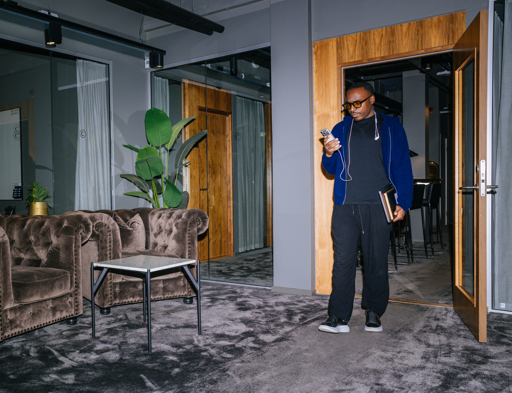

Klubb / organisation.
En klubb eller verksamhet kan ta in mig kring en eller flera individer, under en period, genom ett pilotupplägg eller ett annat avgränsat samarbete. Ett komplement till det sportsliga ledet, inte en ersättning.

Arbetet
Avgränsning
Ett första samtal med klubben där vi ringar in behov, roller och avgränsning.
Startprofil
En startprofil per individ: var perspektivet krymper och vad som styr under press.
Individuella processer
Återkommande individuella processer, periodiserade efter fas och mål.
Uppföljning
Uppföljning av synligt beteende över tid, inte lösa intryck.
Inled en dialog.